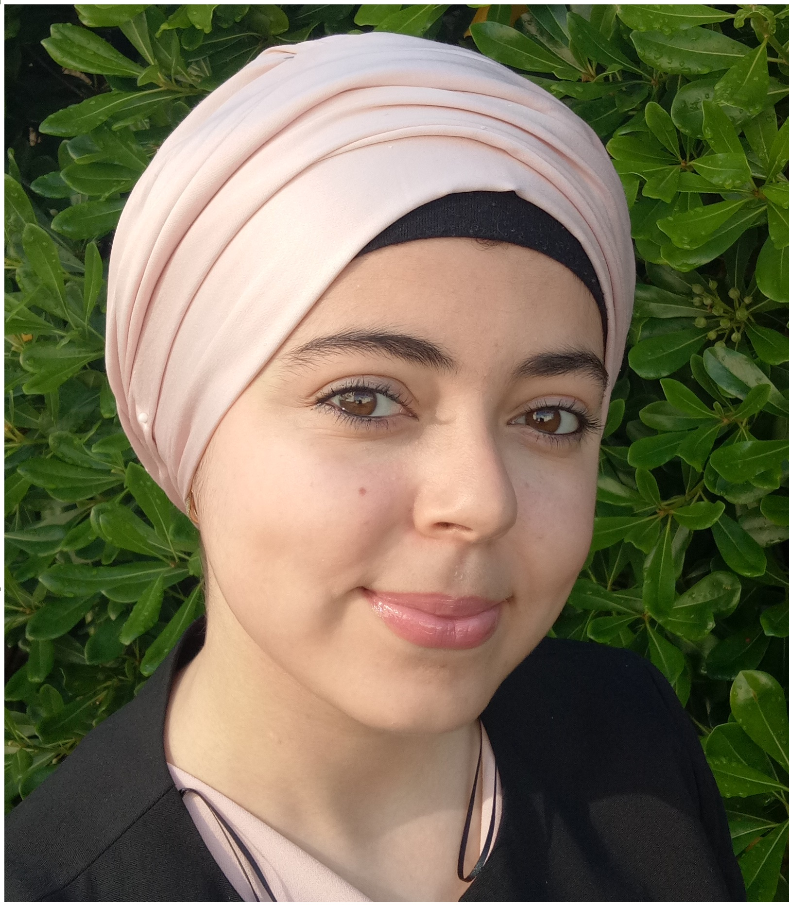

Vous savez pas quoi cuisiner
Vous voulez passer moins de temps en cuisine
Vous voulez faire plus attention et avoir un programme sain et équilibré
Motivation & Organisation.
suivre notre programme.
Profitez de votre nouvelle routine et de votre temps libre.parlez nous en!
Hello, je m'appel Nesrine,j'habite en France.C'est mon deuxieme rramadan loin de ma famille.Cependant, cette année je voulez participer a leurs ramadan meme si je suis pas présente.
Au debut mon idée etait de faire une liste de 30 recettes à ma mère rapides et equilibrés, afin qu'elle puisse se reposer un peu et faire autre chose que cuisiner pour les autres.Cependant, je crois que toutes mamans ou femmes le merites , c'est pourquoi j'ai creé ce site.
Say YES!! to a new routine,more time Nesrine MOUHOUBI